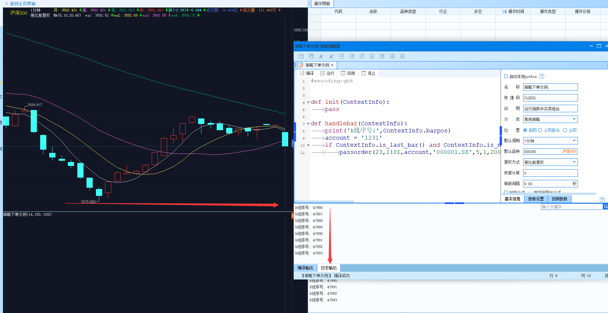
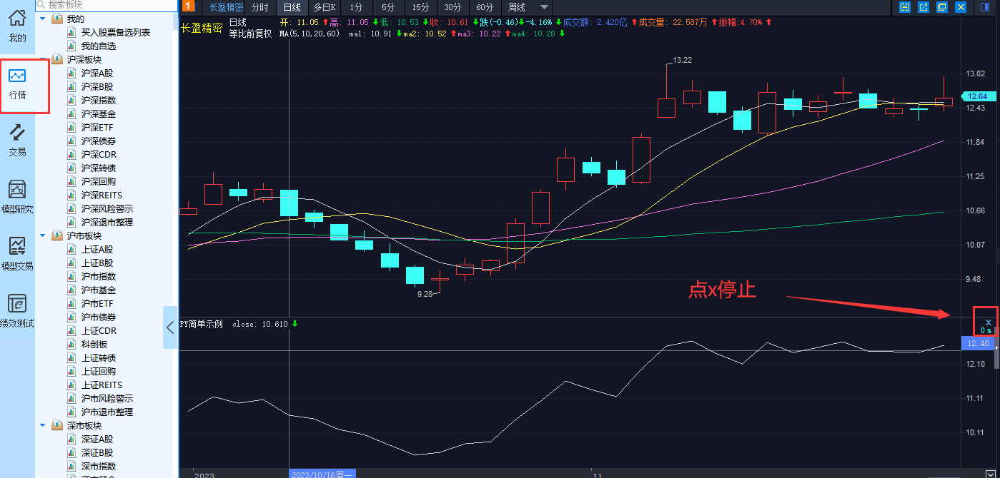
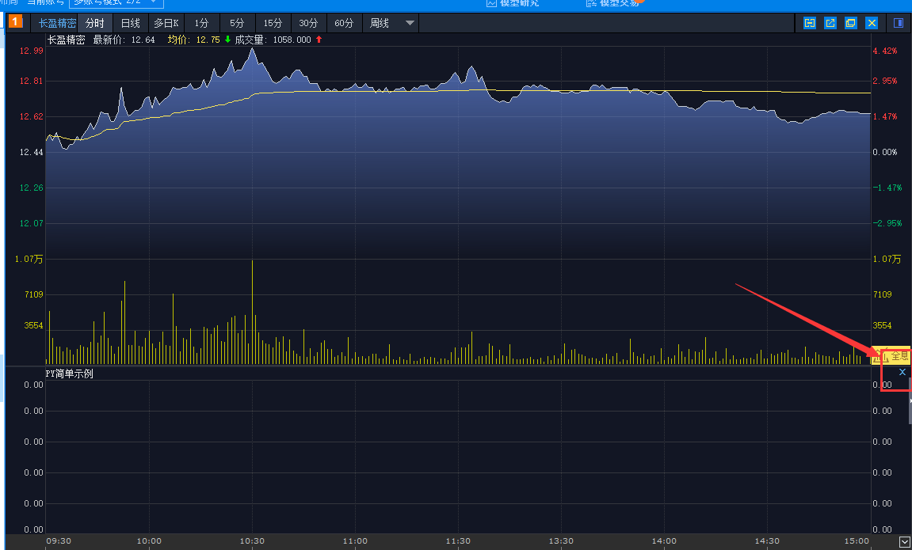
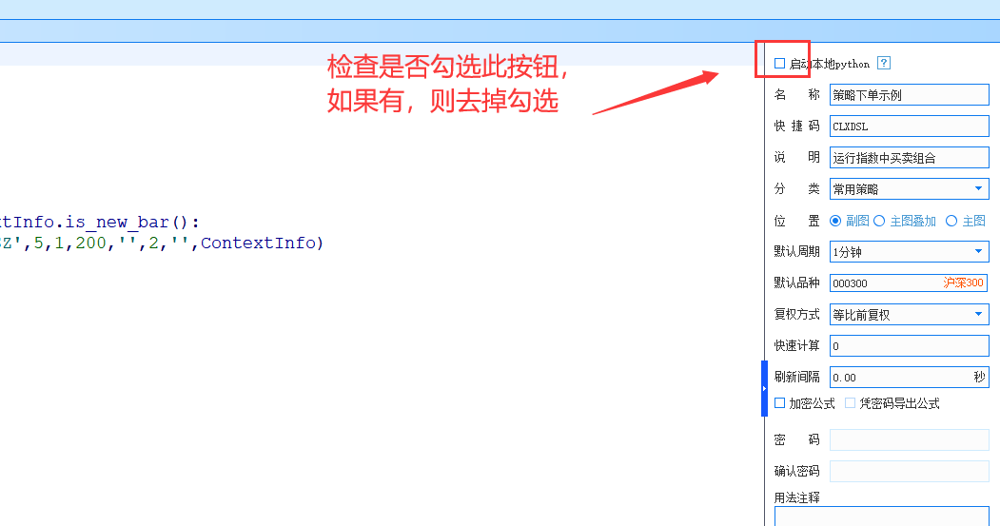
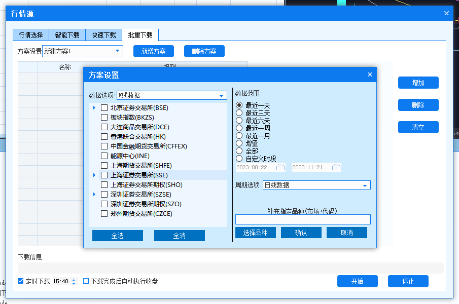
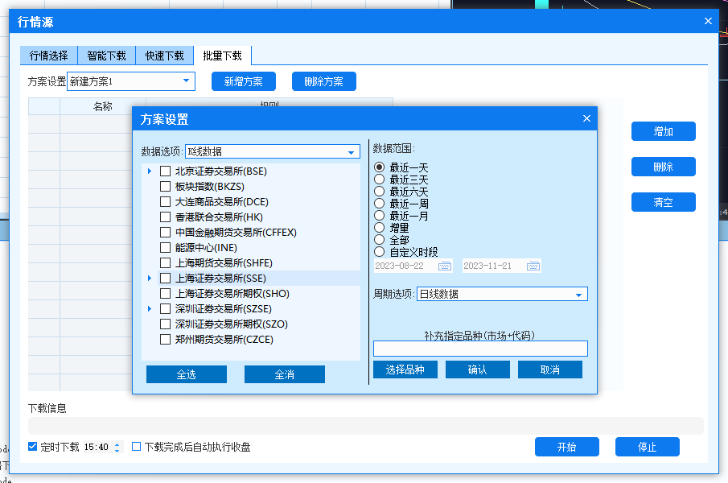

安装路径的选择
在安装 QMT 软件时，请不要安装在C盘，以避免因权限问题导致的使用问题
若是只能安装到C盘，请在启动时选择以管理员权限启动
下载python库
初次使用 QMT 时，请确保补全所需的 Python 库。安装完毕后，不要忘记重启客户端。
提示
在盘中，下载速度会很慢，建议盘前或盘后更新。

关于ContextInfo
由于底层机制的限制，ContextInfo中存储的变量值将会回滚，即在对ContextInfo中的变量进行修改之后，在下一次handlebar调用时，这些修改将不会保留。具体细节请参阅常见问题。因此，在完全理解ContextInfo机制之前，请避免在其中存储任何变量。
推荐用法
class G(): pass
g = G()
def init(ContextInfo):
g.stock_list = ['000001.SZ']
def handlebar(ContextInfo):
g.stock_list.append('600000.SH')
错误用法
警告
下面的示例请勿使用
def init(ContextInfo):
ContextInfo.stock_list = ['000001.SZ']
def handlebar(ContextInfo):
ContextInfo.stock_list.append('600000.SH')
关于线程和进程
QMT中，python无法使用多线程和多进程，而且所有策略都在同一线程中执行，所以策略中应该尽量避免阻塞类的写法，否则会影响其他策略的执行。
主图解析
如下图所示，策略执行依赖于K线图。这里所说的主图即是K线图，策略正是在K线图上运行，也是由它驱动的（也有非K线驱动的策略写法，详见快速入门）。
K线回放：策略在客户端运行时会从第一根K线开始，依次调用handlebar函数，直至最后一根K线。并且在盘中，每一个新的行情快照都会触发一次handlebar函数调用（无论主图的周期如何）。如果想要过滤掉某些K线，可以设置右侧的快速计算，或使用ContextInfo. is_last_bar ()函数进行过滤。

策略运行无反应/运行报错提示 "run script failed! "
最快解决方法是点击右上角布局按钮，选择恢复默认布局
如果策略运行后无任何反应，首先检查客户端是否有其他策略正在运行，如果有，请先将其停止，然后重试。检查方法如下图所示：




提示
最后建议重启客户端
数据下载
QMT提供了许多接口来依赖数据下载功能。客户端的数据下载功能如下图所示：
 而且，在批量下载中可以设置定时下载，这样可以方便地每天自动下载当日的行情数据。 
而且，在批量下载中可以设置定时下载，这样可以方便地每天自动下载当日的行情数据。 